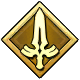
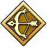
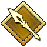
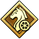
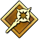
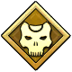
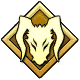
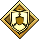

SaberArtoria Pendragon
Fate/stay night
Basada en la leyenda del rey Arturo; una de las Servants más reconocibles del universo Fate.
Cada Servant es invocado dentro de una clase que define su estilo de combate y habilidades. A continuación se presenta una comparativa completa de las siete clases estándar junto con las clases Extra conocidas dentro del universo de Fate.
.png)
| Clase | Categoría | Arma / Concepto | Rasgo distintivo |
|---|---|---|---|
| Saber | Estándar | Espada | Mejor equilibrio entre ataque y defensa |
| Archer | Estándar | Arco / Proyectiles | Mayor alcance; habilidad de Acción Independiente |
| Lancer | Estándar | Lanza / Pica | Gran movilidad, alcance medio y agilidad superior |
| Rider | Estándar | Montura / Vehículo | Especialista en invocar criaturas o medios de transporte legendarios |
| Caster | Estándar | Magia / Hechizos | Mayor reserva y control de energía mágica; creación de territorio |
| Assassin | Estándar | Dagas / Sigilo | Especialista en asesinatos silenciosos y presencia oculta |
| Berserker | Estándar | Armas pesadas / Fuerza bruta | Aumento masivo de atributos a cambio de perder la razón (Encantamiento de Locura) |
| Ruler | Extra | Estandarte / Reglas del Grial | Imparcial arbitro de la guerra; inmune a la manipulación directa |
| Avenger | Extra | Odio / Venganza | Espíritu impulsado por el rencor que acumula poder al recibir daño |
| Moon Cancer | Extra | Entidad digital / Anomalía | Seres que amenazan o manipulan el entorno virtual de la Célula Solar SE.RA.PH |
| Alter Ego | Extra | Constructo de emociones | Entidad nacida de fragmentos de personalidad o emociones divididas |
| Foreigner | Extra | Poderes primigenios / Cósmico | Seres conectados con entidades de dimensiones ajenas o dioses primigenios |
| Pretender | Extra | Engaño / Identidad falsa | Especialistas en suplantar héroes y nombres para engañar la lógica de la existencia |
| Shielder | Extra | Escudo masivo | Especialista en defensa absoluta y protección de sus aliados |
| Saver | Extra | Espiritual / Mesías | Espíritus heroicos de tipo salvador que acuden a rescates de gran escala |
| Beast | Extra | Calamidad de la Humanidad | Las siete grandes amenazas nacidas del amor retorcido por la humanidad |

SaberFate/stay night
Basada en la leyenda del rey Arturo; una de las Servants más reconocibles del universo Fate.

ArcherFate/stay night
Rey de Uruk inspirado en la Epopeya de Gilgamesh; posee un tesoro con incontables armas legendarias.

LancerFate/stay night
Héroe de la mitología irlandesa, célebre por su lanza maldita Gáe Bolg.

RiderFate/Zero
Inspirado en Alejandro Magno; conduce el carro Gordius Wheel junto a sus soldados invocados.

CasterFate/stay night
Hechicera de la mitología griega, ligada a la leyenda de Jasón y los Argonautas.

Assassin / RiderFate/Apocrypha
Caballero del ciclo carolingio conocido por su hipogrifo y su actitud despreocupada.

BerserkerFate/stay night
Una posible versión futura de Shirou Emiya, especializado en proyectar copias de armas legendarias.

Master / ShielderFate/Grand Order
Compañera y protectora de Ritsuka Fujimaru, protagonista del videojuego móvil.
Iconos oficiales de clase dorados del universo Fate.